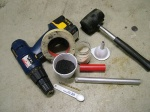
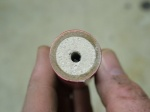
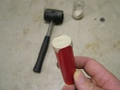
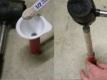
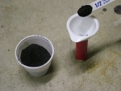
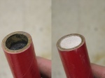
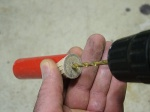
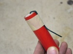

A fountain (also referred to as a gerb) is a thick walled cardboard tube that is filled with pressed pyrotechnic composition. It has a solid clay plug at the base and a nozzle or choke at the exhaust end. At effect time the composition burns and the choke generates intense pressure inside the tube. As the composition escapes it sprays sparks, flame and gasses high into the air. The effect can be altered based on the composition and without a choke the effect would be a weak spray of sparks.
A fountain functions much like a end burning rocket and requires a composition that generates little to no dross as this will cause slag in the nozzle, limiting its performance or causing it to explode. Some commercial fountains are charged with varying colored compositions, meaning the effect will change colour during the display.
Materials
Casing
A thick walled paper tube is used as a casing. Under no circumstances be tempted to use materials other than paper. It is dangerous and unnecessary. Find, roll or buy thick walled cardboard tubes, preferably parallel wound as they are much stronger than spiral wound tubes. The tubes should be sufficiently strong to allow pressing or ramming without wrinkling and to withstand the intense internal pressure at effect time. In this example we are using a gloss red 3/4" inside diameter tube which is 3 1/2" long and has a 1/8" wall. A wide range of casings can be purchased from Pyrocreations.

Effect charge
Various compositions can be used as the effect charge however it must not be a formula that generates large amounts of dross. Dross will clog the nozzle exhaust and reduce the performance or cause the firework to explode. Most fountain compositions contain metal powders which spray white or orange sparks into the air. Adding course metal powders may alter the burn rate of the mixture slightly, perhaps requiring you to adjust the dimensions of the nozzle.
The Nozzle
Fountains require a nozzle. This is a plug in the exhaust end of the fountain, with a small opening. Nozzles for fireworks are usually made with clay. Bentonite and kaolin clay work well. The dry clay powder is rammed into the casing, producing a solid plug. Cheap kitty litter is often made of bentonite clay and may be used instead. Grind up the kitty litter into a fine powder, which is most easily done with a ball mill or coffee grinder. This powder can be used to produce rock-hard nozzles that erode very little.
Tools
A rammer and a hammer are needed (or a hydraulic press). Non sparking materials, such as aluminium, brass, rubber and wood should be used. You will also need paper tape, visco fuse or black match and a scoop for your various powders.

Construction
Temporarily seal one end of the casing with a piece of paper tape (if you have specialised tooling you will not need to do this). Take a small amount of nozzle mix and dump this into the casing, tapping it to settle the powder. The aim is to approximately make the nozzle the same thickness of the casings inner diameter. This can be a little tricky and is an important step in building your fountain. A nozzle that is too thin will not be able to withstand the inner pressure and blow off. Make your nozzle too thick and it will affect the fountains performance. To be consistent make some tooling like a powder scoop to measure the exact amount every time that way you are guaranteed accurate results.

Insert the ram into the inner casing and gently ram it with your hammer, or press it with your hydraulic press. You don't need to use a huge amount of force to achieve a rock hard nozzle. Exerting too much force will split you casing or cause a very small fracture, which under pressure can cause your firework to CATO.

Next you need to add your effect charge in small increments (as always, no more at a time than will give a layer after ramming as thick as the casings inner diameter). As with the nozzle, using a powder scoop for adding the powder can help produce consistent results at this point. If you add too much powder you can create small air pockets in the composition and this will affect the performance of your fountain.

As some compositions can only be pressed and not rammed it is very important you identify this prior to ramming the composition. Finally, ram or press a layer of clay again to form an end plug. The end plug of the fountain in the example is as thick as the casings inner diameter.

Next you will need to drill a hole in the fountain nozzle. Depending on the quality of your powder a 4 mm hole should be sufficient however a hole 1/2 the size of the tubes ID is a generally accepted rule of thumb. Take care to center the hole well. To increase the surface area of powder available initially, a mandrel (core) is drilled into the effect charge as well. In the example, the hole was drilled 10 mm into the effect charge.

All that remains is a fuse to light and attaching the fountain to a solid wood base. A sufficiently long (don't economise on fuse!) length of fuse is inserted into the nozzle and core of the fountain, as far as it goes. Black match or visco fuse may be used. If the fuse is loose, to prevent it from falling out it may be secured with a small piece of tissue paper which is pressed into the nozzle opening or prime . The fuse may be bent over and held in place with paper tape on the side of the fountain. This way of fusing allows you to light the fountain without having to hold a flame directly over the nozzle of the fountain and sparks falling into the nozzle, causing premature ignition. Remember, never stand over the fountain when lighting. The firework can now be mounted on a large solid piece of wood with hot melt or white glue.

Helpful Tip
To help inhibit dross formation, small amounts of hot mix composition (for example very fast burning black powder) can be added at periodic intervals. This is usually done at a ratio of 3:1. So 3 scoops of effect composition and 1 scoop of hot mix composition. This is not required for all fountain (gerb) compositions, however if you experience your nozzle being choked with dross then this will assist in clearing it during effect time.